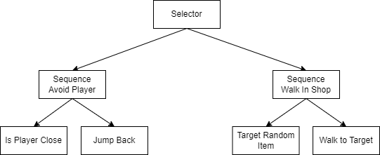

Shopping Cart Race is a multiplayer racing game. The goal is to beat your opponents by collecting all the items on your grocery list and reaching the checkout before they do. Be careful not to get your items stolen, and steer that cart cautiously or else your items will all drop out!
This project was made for an assignment, tasked to showcase simple networking, artificial intelligence and human-computer interaction concepts.
The main goal of implementing a networking module in this game is to add multiplayer support for separate game instances. A session can be hosted by a player while other player will be able to connect on their game instance.
Players are spawned in separate locations in the same server. This is to avoid them from overlapping, which caused problems with movement due to how the shopping cart was modelled.
Properties of the players would need to be stored on the network, to relay their information to other players. The important information to show is of course the position and rotation of the players, allowing them to interact with each other live. It is a matter of updating your information to the network, and receiving information from the network of other players. This is done by checking if the player object is owned by your client, meaning your game client is the one controlling it, then sending your position to the network. Inversely, if your client doesn't control a player object, that objects position is updated through the network instead, taking that information and applying it to your client.
Shopping item properties will also need to be stored on the network similarly, as the player will pick them up and store them in their carts, and other players will be able to see the items. An RPC call is used to update item locations on the network, since updating positions on clients locally causes a contradiction with the network, making the item return to its original location as the item's position data is received from the network.
To add more life to the game, AI is used to create other characters and obstacles in the game. The basic AI I created the behaviour for is the customer. Here's a simple behaviour tree of the customer.
By default, the customer will find an item to walk to. In code, this could be done by looking through all possible items, and selecting one to go towards. If no items are found in the scene, then the node couldn't run, and the process will halt and result in a failure. Otherwise, the item will be set as the target on the AI balckboard.
After a target is successfully found, the customer can start moving. By using Unity's built in NavMeshAgent, a destination location can be set fairly easily. In the process of moving, the movement node will be set to running. After the AI reaches their destination, they will have succeeded their function and they should stop targetting the item.
The player acts the role of a crazy shopper, running around with their cart at high speed. When the player approaches a customer, the customer would jump back to avoid colliding with the player. By measuring the distance between the player and the customer, we can see if they are too close. If so, the node IsPlayerClose will be marked success, and we can proceed to run the node to make the customer jump back.
The customer will jump back, away from the player's approaching direction. This vector is found by comparing the positions of the player and the customer. The customer will move quickly to the opposite direction of this vector, thereby showing that they're jumping away.
A good user interface should be clear to the player of its funcationalities. For my UI, I had a simple grocery list and a map, two pretty self-explanitory elements, as they are common in real life or in games, allowing the player to understand them immediately.
The grocery list acts as a checklist of items, so I have to make sure that this is simulated by crossing off items as they get colelcted.
Just simply collecting all items does not automatically let you win however, so I improved upon it by adding prompts for what the player should do after everything is crossed off, like going to the register. I have to make sure that the player can't check out too early as well, so another prompt is added for when the player exits too early.
The map could also be improved. As it stands, the map is functional as a guide for the player, but it is also pretty small, and is not clear on what each symbol represents. To resolve this, I've added a toggleable fullscreen map, allow the player to bring it up at any point, without obscuring the game at all times.